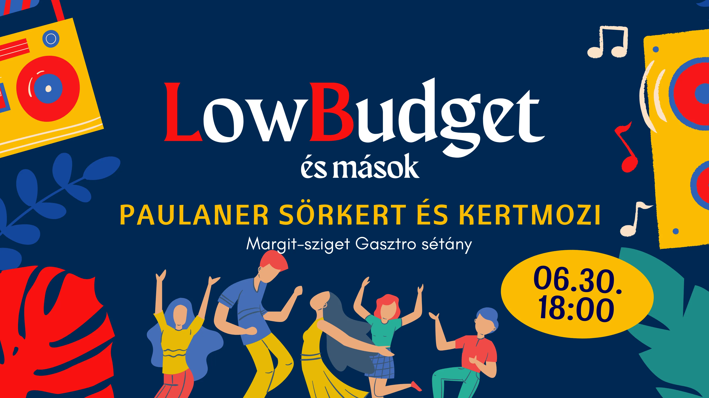
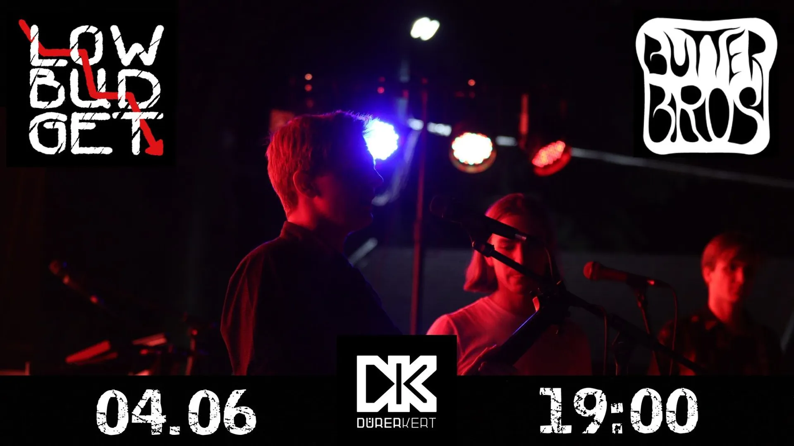

Koncert!

Köszönjük mindannyiótoknak a falakat lebontó hangulatot! Ütős bulit csináltatok, újra és újra meg tudtok lepni!
Továbbá jár a köszi a Küszöbnek a közös buliért, Simon Dávidnak a hangért és Molnár Barninak a képekért (Galéria)!
Nemsokára új konci új infói, stay tuned!
Facebook oldal →
Rólunk
Ez a zenekar régóta létezik már, mégis olyan, mint egy kisgyermek, aki nem csinál még sok hasznos dolgot, de ha felébred, mindenkinek a lelkébe egy kis boldogságot csöppent, és az emberek egy pillanatra elfelejthetik, hogy rohan az idő...
Minket ti neveltek. Veletek növünk fel. Így érik meg ez a csoda. Mi pedig voltunk, vagyunk és maradunk.
